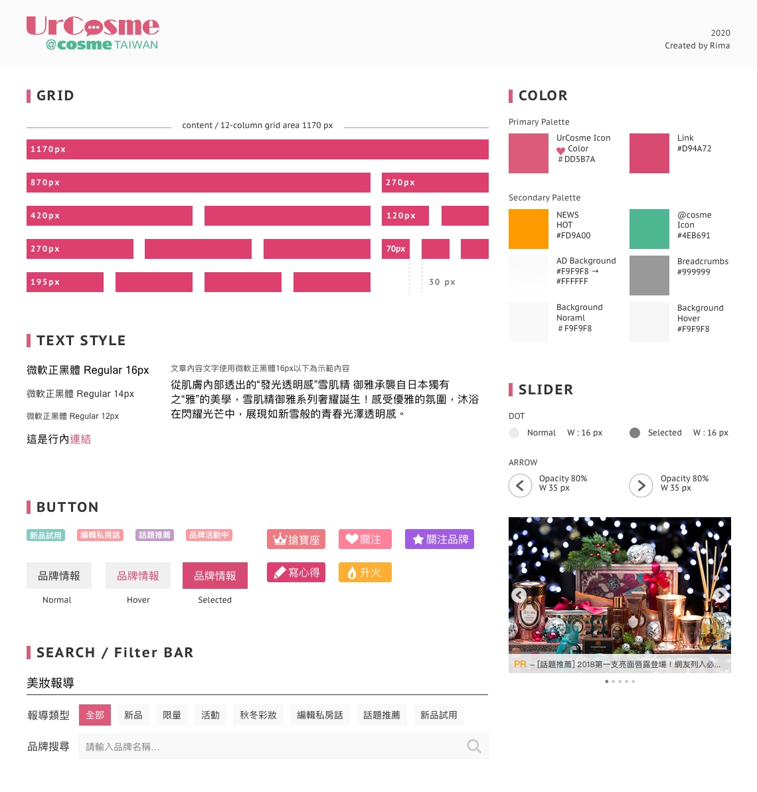
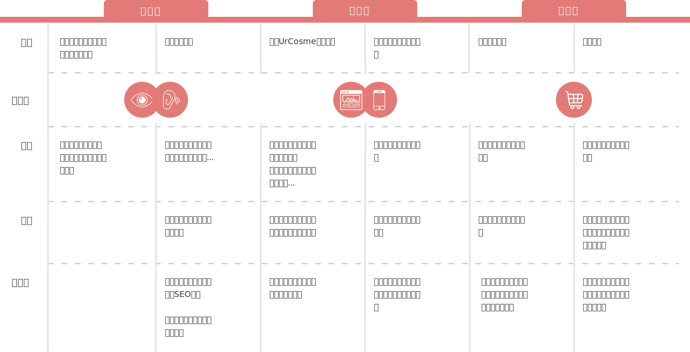
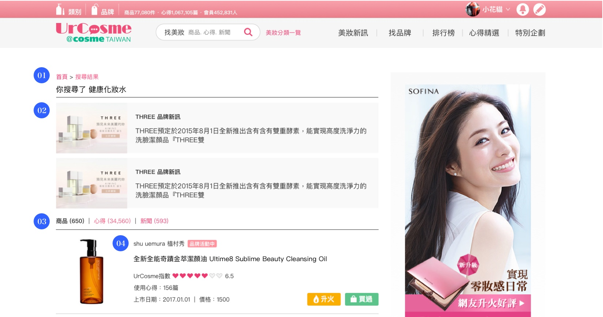
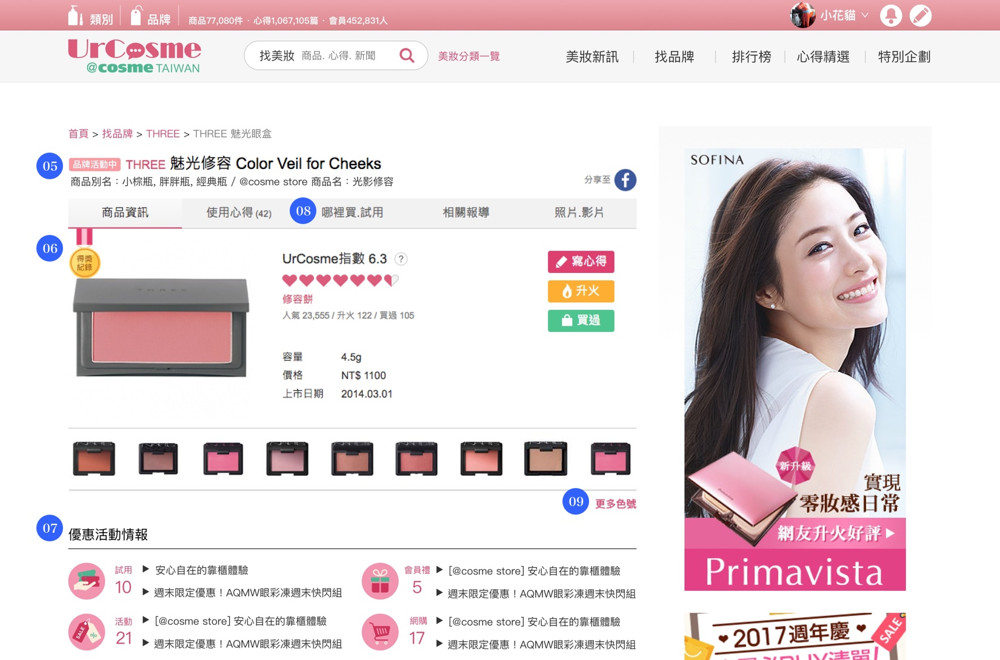
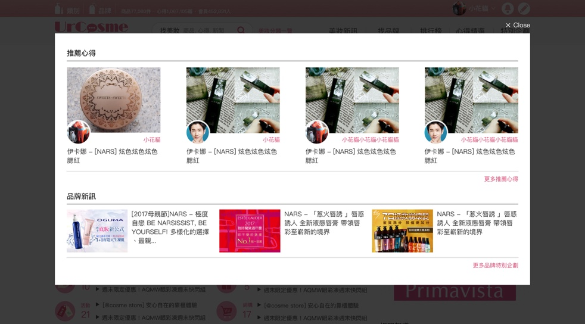
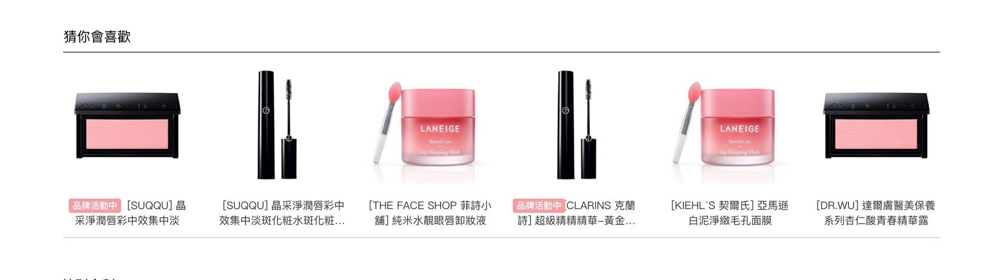
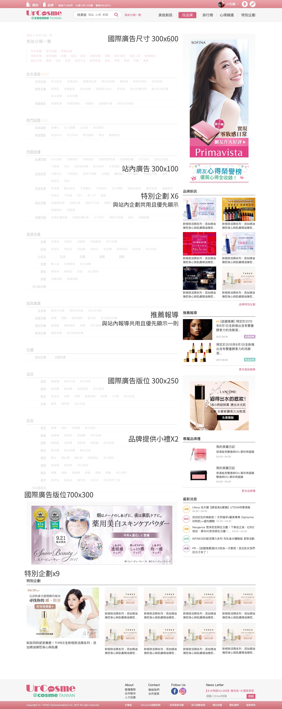
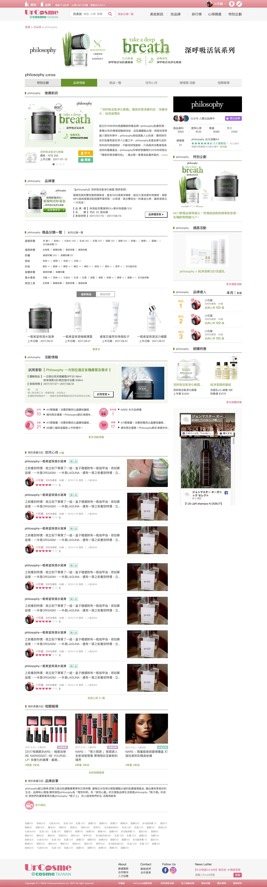
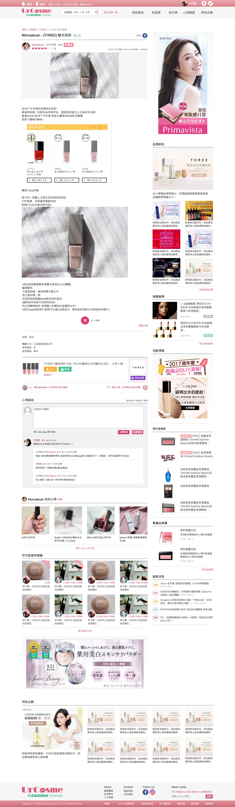

Web & Mobile
2017-2018
UI.UX Designer in i-TRUE Team
UrCosme 美妝平台
UrCosme 是台灣最大的美妝情報平台，亦是熱愛美妝品的使用者發表使用心得的或與同好一起討論的社群媒體。網站中包含大量的產品類型、各個產品的基本資訊、商品新聞、用戶心得...等等，我們透過UX的研究方法，觀察用戶在網站上的使用過程，挖掘用戶的真正需求，並設計對於用戶能帶來良好體驗的介面。
Highlight
- Design guideline規劃
由舊有的樣式整理並重新設計出符合UI設計一致性的風格物件。 - 改挖掘顧客痛點
透過顧客旅程地圖挖掘出用戶對於美妝品的痛點，進而規劃出符合需求的操作流程。 - 改善搜尋、瀏覽體驗
透過顧客的痛分析，優化了產品資訊的頁面，以及整個搜尋產品的流程。 - 增加頁面轉換率
重新規劃網站上的廣告版位，藉此提高使用者在頁面間的轉換率及滿足B端客戶的需求。 - 新增B端品牌產品的曝光率及獨特性
製作B端品牌客戶的專屬頁面，提高產品的曝光度同時也提供使用者不同面向的資訊蒐集。
Design guideline規劃
UrCosme網站擁有十年以上的歷史，卻沒有完整的Design Guideline，導致站上產生許多設計不一致性的問題，進而讓使用者在操作上感到困惑和挫折，更影響了程式開發的速度，因此我們將舊有的樣式歸納和整理，並重新設計出符合UI設計一致性的風格物件。

挖掘顧客痛點
透過顧客旅程地圖，洞察使用者對於美妝品的購物前、中、後流程中，找出現有網站的優、缺點。我們挖掘出使用者的痛點分別為：
- 分散的產品資訊
使用者會在不同的社群媒體、分享平台或產品的官方網站上蒐集使用評論和產品資訊，但評論往往過於片面或不具有公信力抑或是產品資訊不用充足。 - UrCosme網站架構過於複雜
產品資訊大量的輸出給使用者，並沒有明確定義區塊的呈現的內容，使用者在操作上會感覺困惑。 - 無法獲取有效參考值
UrCosme網站內的的部份產品的心得評論不夠多，使用者無法獲取參考數據。 - 操作流程不流暢
當使用者有購物意願時，沒有適時提供使用者購物通路的資訊，可能會失去他們前往實體或線上通路消費的意願。

改善使用者搜尋產品資訊的體驗
我們結合了B端客戶與C端使用者的需求，在不同的頁面上提供必要的資訊或是提醒文字等，以提供良好的體驗服務。 以下為搜尋結果頁與產品頁之範例。


- 01 新增麵包屑，提升SEO排名、讓使用者了解目前所在頁面。
- 02 推廣相關產品情報給使用者，同時配合C端客戶推廣品牌活動。
- 03 新增搜尋的產品數量結果，讓使用者能知道有多少資料存於網站，也提高SEO排名。
- 03 使用者可以在此頁查詢不只與關鍵字相關的產品、心得和新聞。
- 04 提供最基本的商品資訊給使用者。
- 05 新增品牌館標誌，當該品牌下的產品舉辦特惠、新品發表時出現。
- 06 得獎紀錄標示，推廣站上的排行榜機制，同時也提供使用者會直覺判斷產品好壞的依據。
- 07 優惠活動與情報，我們發現使用者對於特惠活動的情報非常感興趣，因此在此頁面的設計上放置了較顯眼的位置。
- 08 新增“哪裡買”頁面，提供使用者更多購買產品的資訊，協助他們完成offline的任務。
- 09 一樣美妝產品時常動輒數十種色號，在此集結了該產品的現有色號供使用者參考。
增加頁面轉換率


為了增加轉換率，我們在許多頁面上增加了區塊性的導線，希望藉由相關的資訊內容引導使用者前往閱讀，這不僅提高了頁面的轉換率，同時也讓使用者獲取更多資訊。
增加B端品牌曝光率及獨特性
廣告版位優化
根據不同的產品屬性，提供相似的功效的廣告類型，利用數據觀察及設計包裝決定廣告放置位子。
根據不同的產品屬性，提供相似的功效的廣告類型，利用數據觀察及設計包裝決定廣告放置位子。

品牌館頁面規劃
為了提供B端品牌顧客有更好的點擊率及轉換率，我們幫品牌客製化小型官方網站於UrCosme網站上，此頁面提供C端用戶最感興趣的購物折扣、試用品索取等優惠，以及能接受最新的品牌產品資訊等。

為了提供B端品牌顧客有更好的點擊率及轉換率，我們幫品牌客製化小型官方網站於UrCosme網站上，此頁面提供C端用戶最感興趣的購物折扣、試用品索取等優惠，以及能接受最新的品牌產品資訊等。
更多UI設計

結果分析
在此次的UX流程優化以及介面重新設計上，有許多大幅度的調整，根據2017年3月的報告指出，使用者從觀看心得頁面轉移至產品屬性頁面的行為增多，產品的瀏覽量增多但因為心得觀看的數量變少，導致流量持平，新的設計也需要透過一些時間才能驗證。